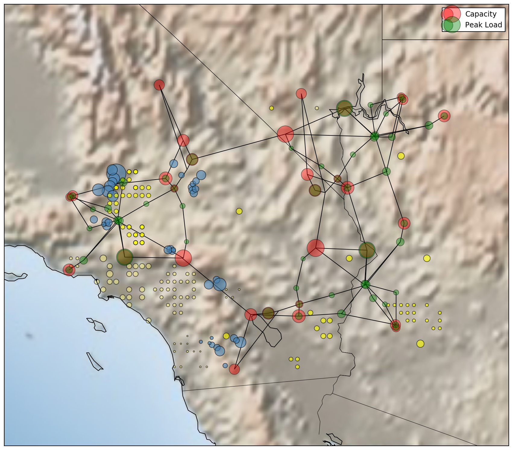

Simulation Scenarios Analysis
System
In this tutorial, we postprocess the simulation results of the Reliability Test System Grid Modernization Lab Consortium (RTS-GMLC) system (DOI: 10.1109/TPWRS.2019.2925557), which is an updated version of the RTS-96 with an artificial location situated on an area that covers parts of California, Nevada and Arizona in the southwestern United States.
The RTS-GMLC test system consists of:
- 73 buses,
- 105 transmission lines,
- 157 generators (including 57 solar PV facilities, 4 wind turbines, 20 hydro units and 1 concentrated solar plant),
- 1 short-duration (3 hours) storage device with 100 % charging and discharging efficiency

Fig. 1 - RTS-GMLC system
{kind=link}
Simulation Scenarios
We have obtained simulation results for the following two simulation scenarios:
Scenario 1 : simulation using the RTS-GMLC test system without any additional modifications (baseline scenario)
Scenario 2 : simulation using the RTS-GMLC test system with increased energy and power capacity of the storage device
The simulations were performed using the PowerSystems.jl and PowerSimulations.jl packages of Sienna. The CopperPlatePowerModel formulation was considered for the NetworkModel, while the formulations chosen for each of the component types we want to include in the simulation are presented in the table below:
More information regarding the different formulations can be found in the PowerSimulations.jl Formulation Library.
We document the above here for completeness, since those will directly define the structure of the optimization problem and consequently its auxiliary variables, expressions, parameters and variables for which realized result values are available.
The script that was used to configure and execute the simulation scenarios referenced above can be found here
Loading Simulation Scenario Results
We begin by loading all the necessary Julia packages.
julia> using PowerSystemsjulia> using PowerSimulationsjulia> using StorageSystemsSimulationsjulia> using HydroPowerSimulationsjulia> using DataFramesjulia> using Datesjulia> using CSVjulia> using Plotsjulia> using PowerAnalyticsjulia> const PA = PowerAnalyticsPowerAnalytics
To begin our analysis, we first specify the directory where the simulation results are stored. In our case, the results of both simulation scenarios have been saved within the same directory.
julia> results_dir = "_simulation_results_RTS""_simulation_results_RTS"
Once we have defined the directory containing our simulation results, the next step is to load them into a structured format for our analysis.
create_problem_results_dict facilitates this by constructing a dictionary where each key corresponds to a scenario name.
We also specify "UC", which corresponds to the name we assigned when creating the DecisionModel and refers to the results of the unit commitment simulation. The populate_system=true argument ensures that the system model is attached to the results.
julia> results_all = create_problem_results_dict(results_dir, "UC"; populate_system=true)[ Info: Loading simulation results from _simulation_results_RTS/Scenario_1 [ Info: checking integrity of simulation_store.h5 [ Info: De-serialized the system from the simulation store. The system does not include time series data. [ Info: Unit System changed to UnitSystem.NATURAL_UNITS = 2 [ Info: Loading simulation results from _simulation_results_RTS/Scenario_2 [ Info: checking integrity of simulation_store.h5 [ Info: De-serialized the system from the simulation store. The system does not include time series data. [ Info: Unit System changed to UnitSystem.NATURAL_UNITS = 2 DataStructures.SortedDict{Any, Any, Base.Order.ForwardOrdering} with 2 entries: "Scenario_1" => SimulationProblemResults{DecisionModelSimulationResults}("UC"… "Scenario_2" => SimulationProblemResults{DecisionModelSimulationResults}("UC"…
Single Scenario Results
In this section of the tutorial, we focus on the results of a single simulation scenario. Since the results_all dictionary contains entries for multiple scenarios, we can extract the results for the first one using:
julia> results_uc = first(values(results_all))Start: 2020-07-01T00:00:00 End: 2020-07-31T00:00:00 Resolution: 60 minutes UC Problem Auxiliary variables Results ┌─────────────────────────────────────────────┐ │ HydroEnergyOutput__HydroEnergyReservoir │ │ StorageEnergyOutput__EnergyReservoirStorage │ │ HydroEnergyOutput__HydroDispatch │ └─────────────────────────────────────────────┘ UC Problem Expressions Results ┌────────────────────────────────────────────────┐ │ FuelConsumptionExpression__ThermalStandard │ │ ProductionCostExpression__RenewableDispatch │ │ ActivePowerBalance__System │ │ ProductionCostExpression__HydroEnergyReservoir │ │ ProductionCostExpression__ThermalStandard │ │ ProductionCostExpression__HydroDispatch │ └────────────────────────────────────────────────┘ UC Problem Parameters Results ┌──────────────────────────────────────────────────────┐ │ ActivePowerTimeSeriesParameter__HydroDispatch │ │ ActivePowerTimeSeriesParameter__RenewableNonDispatch │ │ ActivePowerTimeSeriesParameter__RenewableDispatch │ │ ActivePowerTimeSeriesParameter__PowerLoad │ │ ActivePowerTimeSeriesParameter__HydroEnergyReservoir │ └──────────────────────────────────────────────────────┘ UC Problem Variables Results ┌────────────────────────────────────────────────┐ │ EnergyVariable__EnergyReservoirStorage │ │ StopVariable__ThermalStandard │ │ ActivePowerOutVariable__EnergyReservoirStorage │ │ StartVariable__ThermalStandard │ │ OnVariable__ThermalStandard │ │ ActivePowerVariable__HydroDispatch │ │ ActivePowerInVariable__EnergyReservoirStorage │ │ ActivePowerVariable__ThermalStandard │ │ ActivePowerVariable__HydroEnergyReservoir │ │ ActivePowerVariable__RenewableDispatch │ └────────────────────────────────────────────────┘
Notice that in the output, the names of the realized auxiliary variables, problem expressions, problem parameters, and problem variables available in the results are all listed.
Obtain the generation time series for each individual thermal component of the system
After confirming that the key ActivePowerVariable__ThermalStandard is present among the realized variables, we can now extract the generation time series for all the thermal (ThermalStandard) generators in our system. To achieve this, we follow two steps:
- Create a
ComponentSelectorthat identifies the component type we are interested in (in this caseThermalStandard).
julia> thermal_standard_selector = make_selector(ThermalStandard)InfrastructureSystems.TypeComponentSelector(ThermalStandard, :each, "ThermalStandard")
- Calculate the active power for the corresponding generators of this type using one of
PowerAnalytics.jldefined metrics, namelycalc_active_power, which retrieves the generation time series from the results.
julia> PA.calc_active_power(thermal_standard_selector, results_uc)744×77 DataFrame Row │ DateTime ThermalStandard__322_CT_6 ThermalStandard__321_CC ⋯ │ DateTime Float64 Float64 ⋯ ─────┼────────────────────────────────────────────────────────────────────────── 1 │ 2020-07-01T00:00:00 0.0 231.6 ⋯ 2 │ 2020-07-01T01:00:00 0.0 170.0 3 │ 2020-07-01T02:00:00 0.0 170.0 4 │ 2020-07-01T03:00:00 0.0 170.0 5 │ 2020-07-01T04:00:00 0.0 170.0 ⋯ 6 │ 2020-07-01T05:00:00 0.0 170.0 7 │ 2020-07-01T06:00:00 0.0 170.0 8 │ 2020-07-01T07:00:00 0.0 170.0 ⋮ │ ⋮ ⋮ ⋮ ⋱ 738 │ 2020-07-31T17:00:00 0.0 293.3 ⋯ 739 │ 2020-07-31T18:00:00 0.0 293.3 740 │ 2020-07-31T19:00:00 0.0 355.0 741 │ 2020-07-31T20:00:00 0.0 293.3 742 │ 2020-07-31T21:00:00 0.0 293.3 ⋯ 743 │ 2020-07-31T22:00:00 0.0 251.8 744 │ 2020-07-31T23:00:00 0.0 231.6 75 columns and 729 rows omitted
Notice that in the resulting dataframe, each column represents the time series of an individual component. This behavior follows from the default settings of make_selector, since we have not specified any additional arguments to modify the default grouping.
It is also important to keep in mind that by default, only the available components of the system will be included in the resulting dataframe.
For a complete list of the PowerAnalytics.jl built-in metrics, please refer to: PowerAnalytics Built-In Metrics.
Obtain the thermal generation time series grouped by prime_mover
In some cases, it is more insightful to aggregate generation by prime_mover_type, in order to better understand the relative contributions of different generation technologies across the system.
To achieve this, we modify our ComponentSelector using rebuild_selector, specifying groupby = get_prime_mover_type. This restructures the ComponentSelector so that thermal generators with the same prime_mover_type are grouped together.
julia> thermal_standard_selector_pm = rebuild_selector(thermal_standard_selector, groupby = get_prime_mover_type)InfrastructureSystems.TypeComponentSelector(ThermalStandard, PowerSystems.get_prime_mover_type, "ThermalStandard")
Once we have this new ComponentSelector, we use the same metric defined in the previous subsection to compute the aggregated generation time series for each unique prime_mover_type.
julia> PA.calc_active_power(thermal_standard_selector_pm, results_uc)744×5 DataFrame Row │ DateTime CT CC ST OT │ DateTime Float64 Float64 Float64 Float64 ─────┼────────────────────────────────────────────────────────── 1 │ 2020-07-01T00:00:00 0.0 836.767 2360.67 0.0 2 │ 2020-07-01T01:00:00 0.0 680.0 2011.6 0.0 3 │ 2020-07-01T02:00:00 0.0 680.0 1598.19 0.0 4 │ 2020-07-01T03:00:00 0.0 680.0 1351.01 0.0 5 │ 2020-07-01T04:00:00 0.0 680.0 1324.0 0.0 6 │ 2020-07-01T05:00:00 0.0 680.0 1322.67 0.0 7 │ 2020-07-01T06:00:00 0.0 680.0 1324.0 0.0 8 │ 2020-07-01T07:00:00 0.0 680.0 1324.0 0.0 ⋮ │ ⋮ ⋮ ⋮ ⋮ ⋮ 738 │ 2020-07-31T17:00:00 0.0 2069.24 2686.0 0.0 739 │ 2020-07-31T18:00:00 0.0 2357.66 2717.0 0.0 740 │ 2020-07-31T19:00:00 0.0 2482.6 2717.0 0.0 741 │ 2020-07-31T20:00:00 0.0 2156.25 2686.0 0.0 742 │ 2020-07-31T21:00:00 0.0 1868.33 2648.52 0.0 743 │ 2020-07-31T22:00:00 0.0 1518.55 2593.33 0.0 744 │ 2020-07-31T23:00:00 0.0 1436.82 2360.67 0.0 729 rows omitted
Identify the day of the week with the highest total thermal generation across the entire system
To identify the day of the week with the highest total thermal generation across the system, we begin by creating a ComponentSelector that aggregates all ThermalStandard components into a single group.
This is done by setting groupby = :all in make_selector, which considers all thermal generators as a unified entity and performs the desired spatial aggregation.
julia> thermal_standard_selector_sys = make_selector(ThermalStandard; groupby=:all)InfrastructureSystems.TypeComponentSelector(ThermalStandard, :all, "ThermalStandard")
We again use the built-in calc_active_power metric in order to compute the active power time series for this aggregated group.
The resulting dataframe contains the single time series representing the total thermal generation across all thermal generators in the system.
julia> sys_active_power = PA.calc_active_power(thermal_standard_selector_sys, results_uc)744×2 DataFrame Row │ DateTime ThermalStandard │ DateTime Float64 ─────┼────────────────────────────────────── 1 │ 2020-07-01T00:00:00 3197.43 2 │ 2020-07-01T01:00:00 2691.6 3 │ 2020-07-01T02:00:00 2278.19 4 │ 2020-07-01T03:00:00 2031.01 5 │ 2020-07-01T04:00:00 2004.0 6 │ 2020-07-01T05:00:00 2002.67 7 │ 2020-07-01T06:00:00 2004.0 8 │ 2020-07-01T07:00:00 2004.0 ⋮ │ ⋮ ⋮ 738 │ 2020-07-31T17:00:00 4755.24 739 │ 2020-07-31T18:00:00 5074.66 740 │ 2020-07-31T19:00:00 5199.6 741 │ 2020-07-31T20:00:00 4842.25 742 │ 2020-07-31T21:00:00 4516.85 743 │ 2020-07-31T22:00:00 4111.89 744 │ 2020-07-31T23:00:00 3797.48 729 rows omitted
Since our goal is to compare generation values across the days of the week, we perform a temporal aggregation using aggregate_time. By passing groupby_fn = dayofweek as an argument, we group the data by day of the week (where 1= Monday, 2 = Tuesday, etc.), summing the total MWh generated on each weekday across the dataset.
julia> df_day = aggregate_time(sys_active_power; groupby_fn = dayofweek, groupby_col = "agg_day")7×3 DataFrame Row │ DateTime agg_day ThermalStandard │ DateTime Int64 Float64 ─────┼─────────────────────────────────────────────── 1 │ 2020-07-06T00:00:00 1 3.59081e5 2 │ 2020-07-07T00:00:00 2 3.43765e5 3 │ 2020-07-01T00:00:00 3 420079.0 4 │ 2020-07-02T00:00:00 4 4.44829e5 5 │ 2020-07-03T00:00:00 5 4.63551e5 6 │ 2020-07-04T00:00:00 6 3.83284e5 7 │ 2020-07-05T00:00:00 7 3.72474e5
Identify the top 10 hours of the month with the highest storage charging values for each Area
Spatially aggregating results by Area can reveal important spatial infromation and is frequently used for example in cases of transmission flow analysis. Area components often represent municipalities, villages or regional balancing areas of the real power system.
In this subsection, we aim to identify the top 10 hours of the month with the highest values of storage charging for each Area of the system.
To do this, we first define a ComponentSelector for all EnergyReservoirStorage components, but instead of grouping them individually, we group them by the name of the Area to which their bus belongs.
julia> storage_area_selector = make_selector(EnergyReservoirStorage; groupby = (x -> get_name(get_area(get_bus(x)))))InfrastructureSystems.TypeComponentSelector(EnergyReservoirStorage, Main.var"#1#2"(), "EnergyReservoirStorage")
Next, using the ComponentSelector we created, we compute the total active power flowing into the storage components of each Area using calc_active_power_in, which is another one of PowerAnalytics.jl built-in metrics.
julia> df_charging = PA.calc_active_power_in(storage_area_selector, results_uc)744×2 DataFrame Row │ DateTime 3 │ DateTime Float64 ─────┼───────────────────────────────── 1 │ 2020-07-01T00:00:00 0.0 2 │ 2020-07-01T01:00:00 0.0 3 │ 2020-07-01T02:00:00 0.0 4 │ 2020-07-01T03:00:00 48.4412 5 │ 2020-07-01T04:00:00 0.0 6 │ 2020-07-01T05:00:00 49.4862 7 │ 2020-07-01T06:00:00 100.0 8 │ 2020-07-01T07:00:00 0.513836 ⋮ │ ⋮ ⋮ 738 │ 2020-07-31T17:00:00 0.0 739 │ 2020-07-31T18:00:00 0.0 740 │ 2020-07-31T19:00:00 0.0 741 │ 2020-07-31T20:00:00 0.0 742 │ 2020-07-31T21:00:00 0.0 743 │ 2020-07-31T22:00:00 0.0 744 │ 2020-07-31T23:00:00 0.0 729 rows omitted
We observe that the resulting dataframe has only a single column for Area "3". This is due to the fact that the RTS-GMLC test system contains only a single storage component, which is located in Area "3".
We then iterate through each Area, sort its time series in descending order and extract the 10 timestamps with the highest charging values, an approach that is frequently used for storage capacity value calculations.
julia> area_columns = names(df_charging, Not("DateTime"))1-element Vector{String}: "3"julia> for col in area_columns top_10_df = sort(df_charging[:, ["DateTime", col]], col, rev=true)[1:10, :] println("The top 10 hours of the month for Area $col are:") println(top_10_df) println() endThe top 10 hours of the month for Area 3 are: 10×2 DataFrame Row │ DateTime 3 │ DateTime Float64 ─────┼────────────────────────────── 1 │ 2020-07-01T06:00:00 100.0 2 │ 2020-07-02T04:00:00 100.0 3 │ 2020-07-04T07:00:00 100.0 4 │ 2020-07-06T07:00:00 100.0 5 │ 2020-07-07T07:00:00 100.0 6 │ 2020-07-08T02:00:00 100.0 7 │ 2020-07-10T02:00:00 100.0 8 │ 2020-07-10T06:00:00 100.0 9 │ 2020-07-12T07:00:00 100.0 10 │ 2020-07-14T06:00:00 100.0
Computing multiple metrics at once
We can efficiently compute multiple metrics and add their time series in the same summary table by using the compute_all function. In this case, we are interested in the three most common storage built-in metrics:
calc_active_power_in: charging power into the storage devicecalc_active_power_in: active power output of the storage devicecalc_active_power_in: amount of energy stored
We can reuse the storage_area_selector defined in the previous subsection to perform spatial aggregation by Area. However, since the resulting summary table will contain a single column for each of the three metrics, we need to adjust the selector’s grouping using rebuild_selector to aggregate the time series across all storage components in the system, rather than by Area.
julia> compute_all(results_uc, [PA.calc_active_power_in, PA.calc_active_power_out, PA.calc_stored_energy], [rebuild_selector(storage_area_selector, groupby = :all), rebuild_selector(storage_area_selector, groupby = :all), rebuild_selector(storage_area_selector, groupby = :all)], ["Storage Charging", "Storage Discharging", "Stored Energy"])744×4 DataFrame Row │ DateTime Storage Charging Storage Discharging Stored Ener ⋯ │ DateTime Float64 Float64 Float64 ⋯ ─────┼────────────────────────────────────────────────────────────────────────── 1 │ 2020-07-01T00:00:00 0.0 0.0 0.0 ⋯ 2 │ 2020-07-01T01:00:00 0.0 0.0 0.0 3 │ 2020-07-01T02:00:00 0.0 0.0 0.0 4 │ 2020-07-01T03:00:00 48.4412 0.0 48.44 5 │ 2020-07-01T04:00:00 0.0 48.4412 0.0 ⋯ 6 │ 2020-07-01T05:00:00 49.4862 0.0 49.48 7 │ 2020-07-01T06:00:00 100.0 0.0 149.48 8 │ 2020-07-01T07:00:00 0.513836 0.0 150.0 ⋮ │ ⋮ ⋮ ⋮ ⋮ ⋱ 738 │ 2020-07-31T17:00:00 0.0 0.0 150.0 ⋯ 739 │ 2020-07-31T18:00:00 0.0 50.0 100.0 740 │ 2020-07-31T19:00:00 0.0 50.0 50.0 741 │ 2020-07-31T20:00:00 0.0 50.0 0.0 742 │ 2020-07-31T21:00:00 0.0 0.0 0.0 ⋯ 743 │ 2020-07-31T22:00:00 0.0 0.0 0.0 744 │ 2020-07-31T23:00:00 0.0 0.0 0.0 1 column and 729 rows omitted
Multiple Scenarios Results
In this section, instead of focusing on a single simulation scenario, we compare results across multiple scenarios. This allows us to explore how changing system component parameters can influence the simulation results.
We begin by creating two new selectors, which aggregate the results for all RenewableDispatch and EnergyReservoirStorage components respectively.
julia> renewable_dispatch_selector_sys = make_selector(RenewableDispatch; groupby=:all)InfrastructureSystems.TypeComponentSelector(RenewableDispatch, :all, "RenewableDispatch")julia> storage_selector_sys = make_selector(EnergyReservoirStorage; groupby=:all)InfrastructureSystems.TypeComponentSelector(EnergyReservoirStorage, :all, "EnergyReservoirStorage")
Next, we list all the built-in metrics we have previously used in the single simulation results analysis section to be computed for each timestep. These are:
We use the selectors thermal_standard_selector_sys, renewable_dispatch_selector_sys and storage_selector_sys to compute the active power of the thermal generators, the total curtailment of the renewable generators and the three storage specific metrics.
julia> time_computations = [ (PA.calc_active_power, thermal_standard_selector_sys, "Thermal Generation (MWh)"), (PA.calc_curtailment, renewable_dispatch_selector_sys, "Renewables Curtailment (MWh)"), (PA.calc_active_power_in, storage_selector_sys, "Storage Charging (MWh)"), (PA.calc_active_power_out, storage_selector_sys, "Storage Discharging (MWh)"), (PA.calc_stored_energy, storage_selector_sys, "Storage SOC (MWh)"), ]5-element Vector{Tuple{ComponentSelectorTimedMetric, InfrastructureSystems.TypeComponentSelector, String}}: (ComponentTimedMetric("ActivePower", PowerAnalytics.var"#139#141"{PowerAnalytics.var"#139#140#142"{DataType}}(PowerAnalytics.var"#139#140#142"{DataType}(ActivePowerVariable)), sum, sum, sum, sum, nothing), InfrastructureSystems.TypeComponentSelector(ThermalStandard, :all, "ThermalStandard"), "Thermal Generation (MWh)") (CustomTimedMetric("Curtailment", PowerAnalytics.var"#113#115"{PowerAnalytics.var"#113#114#116"{typeof(-), Tuple{ComponentTimedMetric, ComponentTimedMetric}}}(PowerAnalytics.var"#113#114#116"{typeof(-), Tuple{ComponentTimedMetric, ComponentTimedMetric}}(-, (ComponentTimedMetric("ActivePowerForecast", PowerAnalytics.var"#139#141"{PowerAnalytics.var"#139#140#142"{DataType}}(PowerAnalytics.var"#139#140#142"{DataType}(ActivePowerTimeSeriesParameter)), sum, sum, sum, sum, nothing), ComponentTimedMetric("ActivePower", PowerAnalytics.var"#139#141"{PowerAnalytics.var"#139#140#142"{DataType}}(PowerAnalytics.var"#139#140#142"{DataType}(ActivePowerVariable)), sum, sum, sum, sum, nothing)))), sum, sum), InfrastructureSystems.TypeComponentSelector(RenewableDispatch, :all, "RenewableDispatch"), "Renewables Curtailment (MWh)") (ComponentTimedMetric("ActivePowerIn", PowerAnalytics.var"#139#141"{PowerAnalytics.var"#139#140#142"{DataType}}(PowerAnalytics.var"#139#140#142"{DataType}(ActivePowerInVariable)), sum, sum, sum, sum, nothing), InfrastructureSystems.TypeComponentSelector(EnergyReservoirStorage, :all, "EnergyReservoirStorage"), "Storage Charging (MWh)") (ComponentTimedMetric("ActivePowerOut", PowerAnalytics.var"#139#141"{PowerAnalytics.var"#139#140#142"{DataType}}(PowerAnalytics.var"#139#140#142"{DataType}(ActivePowerOutVariable)), sum, sum, sum, sum, nothing), InfrastructureSystems.TypeComponentSelector(EnergyReservoirStorage, :all, "EnergyReservoirStorage"), "Storage Discharging (MWh)") (ComponentTimedMetric("StoredEnergy", PowerAnalytics.var"#139#141"{PowerAnalytics.var"#139#140#142"{DataType}}(PowerAnalytics.var"#139#140#142"{DataType}(EnergyVariable)), sum, sum, sum, sum, nothing), InfrastructureSystems.TypeComponentSelector(EnergyReservoirStorage, :all, "EnergyReservoirStorage"), "Storage SOC (MWh)")
We are also interested in a set of metrics that are not available as time series, which we define in timeless_computations. These include the:
- objective value
- cumulative solve time
- total memory allocated during the simulation
Understanding memory usage across simulations is often particularly helpful when working with larger system models on NREL's HPC systems, since it can inform decisions regarding resource allocation, such as choosing between standard and high-memory partitions in order to avoid out-of-memory (OOM) errors.
julia> timeless_computations = [PA.calc_sum_objective_value, PA.calc_sum_solve_time, PA.calc_sum_bytes_alloc]3-element Vector{ResultsTimelessMetric}: ResultsTimelessMetric("SumObjectiveValue", PowerAnalytics.Metrics.var"#36#37"{String}("objective_value")) ResultsTimelessMetric("SumSolveTime", PowerAnalytics.Metrics.var"#36#37"{String}("solve_time")) ResultsTimelessMetric("SumBytesAlloc", PowerAnalytics.Metrics.var"#36#37"{String}("solve_bytes_alloc"))julia> timeless_names = ["Objective Value", "Solve Time (s)", "Memory Allocated"];
Next, we define two utility functions, which form the core of our multi-scenario analysis pipeline and are executed for each individual scenario, namely:
analyze_one: an analytics routine, which takes in the desired time-based and timeless metrics as arguments. It computes the selected time series metrics, aggregates them over time and appends the timeless metrics into a unified summary table.save_one: saves the outputs from analyze_one to disk
julia> function analyze_one(results) time_series_analytics = compute_all(results, time_computations...) aggregated_time = aggregate_time(time_series_analytics) computed_all = compute_all(results, timeless_computations, nothing, timeless_names) all_time_analytics = hcat(aggregated_time, computed_all) return time_series_analytics, all_time_analytics endanalyze_one (generic function with 1 method)julia> function save_one(output_dir, time_series_analytics, all_time_analytics) CSV.write(joinpath(output_dir, "summary_dataframe_new.csv"), time_series_analytics) CSV.write(joinpath(output_dir, "summary_stats_new.csv"), all_time_analytics) endsave_one (generic function with 1 method)
Finally, we define the main post-processing routine that runs across all scenarios. After processing all scenarios, it concatenates the summaries into a single dataframe, which also gets exported to a csv file.
julia> function post_processing(all_results) summaries = [] for (scenario_name, results) in pairs(all_results) println("Computing for scenario: ", scenario_name) (time_series_analytics, all_time_analytics) = analyze_one(results) save_one(results.results_output_folder, time_series_analytics, all_time_analytics) push!(summaries, hcat(DataFrame("Scenario" => scenario_name), all_time_analytics)) end summaries_df = vcat(summaries...) CSV.write("all_scenarios_summary_new.csv", summaries_df) return summaries_df endpost_processing (generic function with 1 method)
We run the post_processing routine with our multi-scenario results we previously defined. We can see the final summary table including all scenarios below:
julia> df = post_processing(results_all);Computing for scenario: Scenario_1 Computing for scenario: Scenario_2julia> show(df; allcols=true)2×10 DataFrame Row │ Scenario DateTime Thermal Generation (MWh) Renewables Curtailment (MWh) Storage Charging (MWh) Storage Discharging (MWh) Storage SOC (MWh) Objective Value Solve Time (s) Memory Allocated │ String DateTime Float64 Float64 Float64 Float64 Float64 Float64 Float64 Float64 ─────┼────────────────────────────────────────────────────────────────────────────────────────────────────────────────────────────────────────────────────────────────────────────────────────────────────────────────── 1 │ Scenario_1 2020-07-01T00:00:00 2.78706e6 31738.5 7127.38 7127.38 55657.3 1.32488e8 90.3095 1.28553e8 2 │ Scenario_2 2020-07-01T00:00:00 2.78266e6 27960.7 48553.3 48553.3 5.72827e5 1.29722e8 94.9514 6.39114e7
Looking at the final dataframe, we can now easily compare the aggregated results of the selected metrics between the two simulation scenarios.
Focusing on the thermal generation and renewable curtailment results for example, we observe a decrease of approximately 0.15% in total thermal generation and approximately 11.90% in renewable curtailment across the full simulation horizon and the entire system. The increased energy capacity of the storage device in the second scenario enables it to store more excess renewable energy rather than curtail it, which in turn reduces the need for thermal generation.